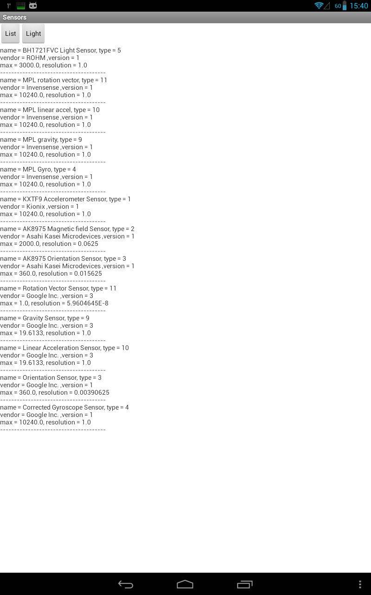
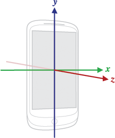
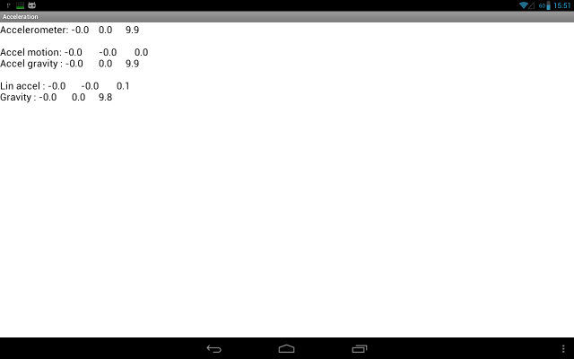
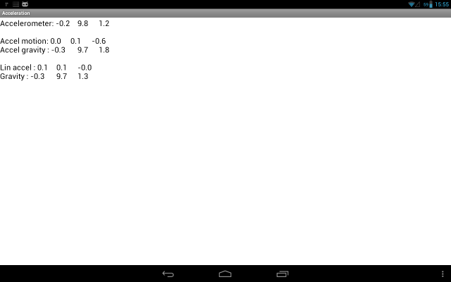
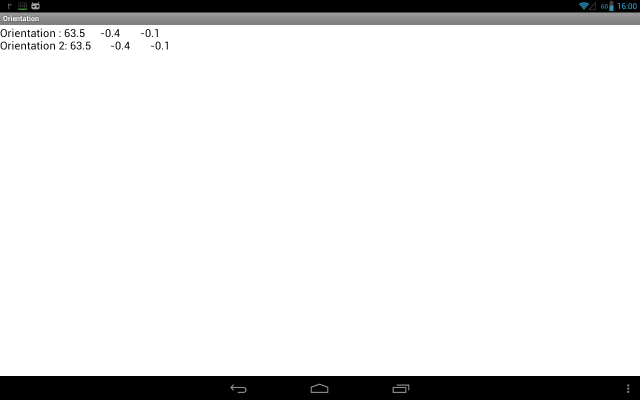
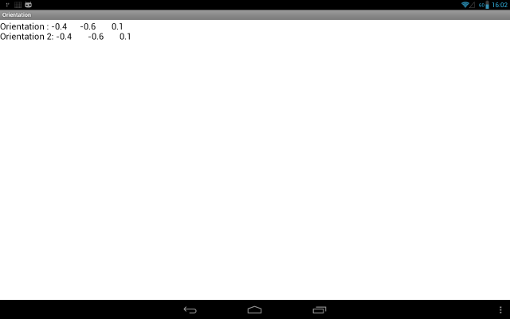

В этом уроке:
- читаем данные с сенсоров
В этом уроке я попробую изложить то, что я понял из всего мною прочитанного по сенсорам. Рассмотрим, как можно получить данные от сенсоров и как эти данные можно использовать.
Android поддерживает несколько типов сенсоров. В данный момент документация сообщает, что таких типов 13. Мы в этом уроке рассмотрим сенсоры света, ускорения, гравитации и магнитного поля.
Получать данные с сенсоров несложно. Для этого нам надо будет запросить у системы объект-сенсор и повесить на него своего слушателя. В метод слушателя будет приходить массив с данными.
Список сенсоров. Сенсор света.
Первое приложение будет выводить нам список доступных сенсоров и данные с сенсора света.
Создадим проект:
Project name: P1371_Sensors
Build Target: Android 4.0
Application name: Sensors
Package name: ru.startandroid.develop.p1371sensors
Create Activity: MainActivity
В strings.xml добавим строки:
<string name="list">List</string>
<string name="light">Light</string>
Экран main.xml:
<?xml version="1.0" encoding="utf-8"?>
<RelativeLayout
xmlns:android="http://schemas.android.com/apk/res/android"
xmlns:tools="http://schemas.android.com/tools"
android:layout_width="match_parent"
android:layout_height="match_parent">
<Button
android:id="@+id/btnSensList"
android:layout_width="wrap_content"
android:layout_height="wrap_content"
android:onClick="onClickSensList"
android:text="@string/list">
</Button>
<Button
android:id="@+id/btnSensLight"
android:layout_width="wrap_content"
android:layout_height="wrap_content"
android:layout_toRightOf="@id/btnSensList"
android:onClick="onClickSensLight"
android:text="@string/light">
</Button>
<ScrollView
android:id="@+id/scroll"
android:layout_width="wrap_content"
android:layout_height="wrap_content"
android:layout_below="@id/btnSensList">
<TextView
android:id="@+id/tvText"
android:layout_width="wrap_content"
android:layout_height="wrap_content">
</TextView>
</ScrollView>
</RelativeLayout>Кнопки для получения списка сенсоров и данных по свету, и TextView для отображения данных.
MainActivity.java:
package ru.startandroid.develop.p1371sensors;
import java.util.List;
import android.app.Activity;
import android.hardware.Sensor;
import android.hardware.SensorEvent;
import android.hardware.SensorEventListener;
import android.hardware.SensorManager;
import android.os.Bundle;
import android.view.View;
import android.widget.TextView;
public class MainActivity extends Activity {
TextView tvText;
SensorManager sensorManager;
List<Sensor> sensors;
Sensor sensorLight;
@Override
protected void onCreate(Bundle savedInstanceState) {
super.onCreate(savedInstanceState);
setContentView(R.layout.main);
tvText = (TextView) findViewById(R.id.tvText);
sensorManager = (SensorManager) getSystemService(SENSOR_SERVICE);
sensors = sensorManager.getSensorList(Sensor.TYPE_ALL);
sensorLight = sensorManager.getDefaultSensor(Sensor.TYPE_LIGHT);
}
public void onClickSensList(View v) {
sensorManager.unregisterListener(listenerLight, sensorLight);
StringBuilder sb = new StringBuilder();
for (Sensor sensor : sensors) {
sb.append("name = ").append(sensor.getName())
.append(", type = ").append(sensor.getType())
.append("\nvendor = ").append(sensor.getVendor())
.append(" ,version = ").append(sensor.getVersion())
.append("\nmax = ").append(sensor.getMaximumRange())
.append(", resolution = ").append(sensor.getResolution())
.append("\n--------------------------------------\n");
}
tvText.setText(sb);
}
public void onClickSensLight(View v) {
sensorManager.registerListener(listenerLight, sensorLight,
SensorManager.SENSOR_DELAY_NORMAL);
}
@Override
protected void onPause() {
super.onPause();
sensorManager.unregisterListener(listenerLight, sensorLight);
}
SensorEventListener listenerLight = new SensorEventListener() {
@Override
public void onAccuracyChanged(Sensor sensor, int accuracy) {
}
@Override
public void onSensorChanged(SensorEvent event) {
tvText.setText(String.valueOf(event.values[0]));
}
};
}В onCreate получаем SensorManager. У него запрашиваем полный список сенсоров, используя метод getSensorList и передавая туда тип сенсора TYPE_ALL.
Чтобы получить конкретный сенсор (Sensor), вызываем метод getDefaultSensor. Передаем тип TYPE_LIGHT и получаем сенсор света. Тут аккуратнее, т.к. если такого сенсора в девайсе нет – то метод вернет null.
В onClickSensList мы отписываем слушателя от сенсора. Об этом чуть позднее.
Далее берем список сенсоров и выводим по ним инфу на экран:
getName – имя
getType – тип
getVendor – создатель
getVersion – версия
getMaximumRange – максимальное значение, которое может вернуть сенсор
getResolution – насколько я понял, это минимальный шаг, с которым может изменяться значение
В методе onClickSensLight мы используем метод registerListener, чтобы на ранее полученный сенсор света (sensorLight) повесить своего слушателя listenerLight. Третий параметр метода – скорость получения новых данных. Т.е. насколько часто вам необходимо получать данные от сенсора. Есть 4 скорости в порядке убывания: SENSOR_DELAY_NORMAL, SENSOR_DELAY_UI, SENSOR_DELAY_GAME, SENSOR_DELAY_FASTEST.
Правда документация пишет, что система может проигнорить это значение и выдавать данные как ей удобно. А начиная с API Level 9 можно вместо константы скорости передавать свое значение в микросекундах. Не перепутайте с миллисекундами.
В onPause мы отписываем своего слушателя от сенсора света. Тут, как обычно, рекомендуется отписываться как только данные вам не нужны, чтобы не расходовать зря батарею.
listenerLight – слушатель, реализует интерфейс SensorEventListener. У него два метода:
onAccuracyChanged – вызывается, когда меняется точность данных сенсора и в начале получения данных. Дает нам объект-сенсор и уровень точности:
SENSOR_STATUS_ACCURACY_HIGH – максимально возможная точность
SENSOR_STATUS_ACCURACY_MEDIUM – средняя точность, калибровка могла бы улучшить результат
SENSOR_STATUS_ACCURACY_LOW – низкая точность, необходима калибровка
SENSOR_STATUS_UNRELIABLE – данные сенсора совсем ни о чем. Либо нужна калибровка, либо невозможно чтение данных.
onSensorChanged – здесь то мы и получаем данные от сенсора в объекте SensorEvent.
Все сохраняем и запускаем приложение. Жмем List и получаем список.
У меня он выглядит вот так:

На скрине видно, что в устройстве есть несколько сенсоров одного типа. Если вместо TYPE_ALL передать в метод getSensorList какой-либо конкретный типа сенсора, то получим список сенсоров только этого типа.
Теперь нажмем Light. Приложение покажет текущее значение освещенности. Попробуйте менять яркость освещения рядом с девайсом, должно меняться значение.
У меня в полутемной комнате показывает 0. Если взять фонарик и издалека начать подносить к датчику света покажет последовательно: 10, 100, 1000, 10000 и в конце 30000. При этом, на скрине со списком сенсоров видно, что максимум значения = 3000, а шаг (если я правильно понял параметр resolution) = 1. Почему такое несоответствие инфы с реальностью – я не знаю.
Ускорение
Далее рассмотрим сенсоры движения. Для этого нам надо будет понять, что в нашем трехмерном пространстве у устройства есть три оси. В документацие Google есть такая картинка.

Т.е. если держать устройство перед собой, то ось X проходит слева направо, ось Y проходит снизу вверх, ось Z проходит сквозь устройство в вашем направлении. Сенсор ускорения вернет нам массив из трех значений, каждое из которых соответствует определенной оси.
Создадим проект:
Project name: P1372_Acceleration
Build Target: Android 4.0
Application name: Acceleration
Package name: ru.startandroid.develop.p1372acceleration
Create Activity: MainActivity
Экран main.xml:
<?xml version="1.0" encoding="utf-8"?>
<RelativeLayout
xmlns:android="http://schemas.android.com/apk/res/android"
xmlns:tools="http://schemas.android.com/tools"
android:layout_width="match_parent"
android:layout_height="match_parent">
<TextView
android:id="@+id/tvText"
android:layout_width="wrap_content"
android:layout_height="wrap_content"
android:textAppearance="?android:attr/textAppearanceLarge">
</TextView>
</RelativeLayout>
MainActivity.java:
package ru.startandroid.develop.p1372acceleration;
import java.util.Timer;
import java.util.TimerTask;
import android.app.Activity;
import android.hardware.Sensor;
import android.hardware.SensorEvent;
import android.hardware.SensorEventListener;
import android.hardware.SensorManager;
import android.os.Bundle;
import android.widget.TextView;
public class MainActivity extends Activity {
TextView tvText;
SensorManager sensorManager;
Sensor sensorAccel;
Sensor sensorLinAccel;
Sensor sensorGravity;
StringBuilder sb = new StringBuilder();
Timer timer;
@Override
protected void onCreate(Bundle savedInstanceState) {
super.onCreate(savedInstanceState);
setContentView(R.layout.main);
tvText = (TextView) findViewById(R.id.tvText);
sensorManager = (SensorManager) getSystemService(SENSOR_SERVICE);
sensorAccel = sensorManager.getDefaultSensor(Sensor.TYPE_ACCELEROMETER);
sensorLinAccel = sensorManager
.getDefaultSensor(Sensor.TYPE_LINEAR_ACCELERATION);
sensorGravity = sensorManager.getDefaultSensor(Sensor.TYPE_GRAVITY);
}
@Override
protected void onResume() {
super.onResume();
sensorManager.registerListener(listener, sensorAccel,
SensorManager.SENSOR_DELAY_NORMAL);
sensorManager.registerListener(listener, sensorLinAccel,
SensorManager.SENSOR_DELAY_NORMAL);
sensorManager.registerListener(listener, sensorGravity,
SensorManager.SENSOR_DELAY_NORMAL);
timer = new Timer();
TimerTask task = new TimerTask() {
@Override
public void run() {
runOnUiThread(new Runnable() {
@Override
public void run() {
showInfo();
}
});
}
};
timer.schedule(task, 0, 400);
}
@Override
protected void onPause() {
super.onPause();
sensorManager.unregisterListener(listener);
timer.cancel();
}
String format(float values[]) {
return String.format("%1$.1f\t\t%2$.1f\t\t%3$.1f", values[0], values[1],
values[2]);
}
void showInfo() {
sb.setLength(0);
sb.append("Accelerometer: " + format(valuesAccel))
.append("\n\nAccel motion: " + format(valuesAccelMotion))
.append("\nAccel gravity : " + format(valuesAccelGravity))
.append("\n\nLin accel : " + format(valuesLinAccel))
.append("\nGravity : " + format(valuesGravity));
tvText.setText(sb);
}
float[] valuesAccel = new float[3];
float[] valuesAccelMotion = new float[3];
float[] valuesAccelGravity = new float[3];
float[] valuesLinAccel = new float[3];
float[] valuesGravity = new float[3];
SensorEventListener listener = new SensorEventListener() {
@Override
public void onAccuracyChanged(Sensor sensor, int accuracy) {
}
@Override
public void onSensorChanged(SensorEvent event) {
switch (event.sensor.getType()) {
case Sensor.TYPE_ACCELEROMETER:
for (int i = 0; i < 3; i++) {
valuesAccel[i] = event.values[i];
valuesAccelGravity[i] = (float) (0.1 * event.values[i] + 0.9 * valuesAccelGravity[i]);
valuesAccelMotion[i] = event.values[i]
- valuesAccelGravity[i];
}
break;
case Sensor.TYPE_LINEAR_ACCELERATION:
for (int i = 0; i < 3; i++) {
valuesLinAccel[i] = event.values[i];
}
break;
case Sensor.TYPE_GRAVITY:
for (int i = 0; i < 3; i++) {
valuesGravity[i] = event.values[i];
}
break;
}
}
};
}В onCreate мы получаем три сенсора:
TYPE_ACCELEROMETER – ускорение, включая гравитацию (ту самую, которая 9.8, из физики)
TYPE_LINEAR_ACCELERATION – ускорение (чистое, без гравитации)
TYPE_GRAVITY - гравитация
В onResume регистрируем один слушатель listener на все три сенсора. И запускаем таймер, который будет каждые 400 мсек отображать данные в TextView.
В onPause отписываем слушателя от всех сенсоров, вызывая метод unregisterListener, но не указывая конкретный сенсор. И отключаем таймер.
Метод format просто отформатирует float значения до одного знака после запятой.
showInfo выведет в TextView данные. Данные у нас будут в пяти массивах.
В слушателе listener в методе onSensorChanged мы определяем тип сенсора и пишем данные в соответствующие массивы:
valuesAccel – данные с сенсора ускорения (включая гравитацию)
valuesAccelMotion и valuesAccelGravity – данные из valuesAccel, разделенные с помощью вычислительного фильтра на чистое ускорение (без гравитации) и гравитацию.
valuesLinAccel – данные с сенсора ускорения без гравитации
valuesGravity – данные с сенсора гравитации
Т.е. мы получаем данные по ускорению (valuesAccel) с сенсора TYPE_ACCELEROMETER и потом вычислительным фильтром сами разбиваем на чистое ускорение и гравитацию. Но можно так не заморачиваться, а использовать сенсоры TYPE_LINEAR_ACCELERATION и TYPE_GRAVITY, которые должны дать нам примерно тот же результат.
Кстати, обратите внимание, как я считываю данные в свой массив. Я читаю значения и пишу их себе. Почему просто не выполнить присваивание типа: valuesAccel = event.values? Если так сделать, то могут периодически проскакивать кривые данные, если вы несколько сенсоров читаете. Там, похоже, используется пул объектов, чтобы сборщик мусора не грузить таким диким кол-вом новых объектов на единицу времени. Соответственно, если вы возьмете объект по ссылке, то пока он дойдет у вас до обработки, система может снова взять его в оборот и записать в него уже новые значения, причем еще и от другого сенсора. Так что лучше читать значения, а не ссылку брать.
Запустим приложение. И положим девайс на стол экраном вверх.

Еще раз обсудим, что вывелось на экран
Accelerometer: данные по ускорению + гравитация. Видим, что третья ось (Z), которая в лежачем положении проходит вертикально вверх, показывает ускорение примерно равное гравитации. Т.е. даже в состоянии покоя сенсор показывает не чистое ускорение а еще и гравитацию, что не всегда нужно.
Мы использовали фильтр, чтобы отделить ускорение от гравитации.
Accel motion: чистое ускорение, вычисленное из ускорения с гравитацией. Здесь все нули, т.к. устройство лежит и не двигается.
Accel gravity: гравитация, вычисленная из ускорения с гравитацией. Здесь первые две оси = нулю, т.к. они проходят паралелльно земле и по этим осям гравитации нет. Зато она есть по третьей оси, которая проходит вертикально. Проще говоря планета не тянет нас влево-вправо-вперед-назад, она тянет нас вниз. Поэтому показывать ускорение в 9.8 будет та ось, которая находится вертикально к земле.
Lin accel: данные с сенсора чистого ускорения (без гравитации). Тут все нули, т.к. устройство в состоянии покоя. Эти значения примерно должны совпадать с теми, что мы посчитали в Accel motion.
Gravity: данные с сенсора гравитации. Третья ось показывает, что она находится вертикально, т.к. гравитация по ней близка к максимуму. Эти значения должны совпадать с теми, что мы посчитали в Accel gravity.
Вы можете подвигать устройство в таком положении с ускорением в разные стороны и понаблюдать, как меняются значения осей. Правда, не очень наглядно получается. Если строить по этим значениям график, будет, конечно, лучше видно их изменения во времени.
Теперь я возьму устройство в руки и подниму перед собой так, чтобы оно было на уровне глаз, а экран смотрел на меня. Т.е. так же, как выше в тексте, на картинке c осями.
Смотрим, как изменились данные.

Accelerometer: четко видно, что теперь вторая ось (Y) расположена почти вертикально, по ней идет гравитация 9.8. А оси X и Z близки к нулю. Они не равны точно нулю, т.к. я держу устройство не идеально ровно и небольшие перекосы дают гравитацию и на эти оси.
Т.е. вывод можно сделать следующий. Чем ближе значение оси к 9.8, тем вертикальнее ее положение в пространстве. А чем ближе к нулю, тем горизонтальнее.
Accel motion и Lin accel показывают нам чистое ускорение. Оно близко к нулю, т.к. я стараюсь не дергать устройство.
Accel gravity и Gravity показывают, что по второй оси имеем почти полную гравитацию, а значит ось расположена вертикально.
Попробуйте понаклонять устройство в разные стороны и наблюдайте как меняется гравитация. При переходе оси от горизонтального положения к вертикальному значение сенсора по этой оси будет меняться от 0 до 9.8.
Ориентация
Теперь попробуем использовать данные сенсора ускорения и добавим к ним данные сенсора магнитного поля. Эти два набора данных при определенных манипуляциях дадут нам углы наклона устройства. Угла будет три, по одному для каждой оси.
Создадим проект:
Project name: P1373_Orientation
Build Target: Android 4.0
Application name: Orientation
Package name: ru.startandroid.develop.p1373orientation
Create Activity: MainActivity
Экран main.xml:
<?xml version="1.0" encoding="utf-8"?>
<RelativeLayout
xmlns:android="http://schemas.android.com/apk/res/android"
xmlns:tools="http://schemas.android.com/tools"
android:layout_width="match_parent"
android:layout_height="match_parent">
<TextView
android:id="@+id/tvText"
android:layout_width="wrap_content"
android:layout_height="wrap_content"
android:textAppearance="?android:attr/textAppearanceLarge">
</TextView>
</RelativeLayout>
MainActivity.java:
package ru.startandroid.develop.p1373orientation;
import java.util.Timer;
import java.util.TimerTask;
import android.app.Activity;
import android.content.Context;
import android.hardware.Sensor;
import android.hardware.SensorEvent;
import android.hardware.SensorEventListener;
import android.hardware.SensorManager;
import android.os.Bundle;
import android.view.Display;
import android.view.Surface;
import android.view.WindowManager;
import android.widget.TextView;
public class MainActivity extends Activity {
TextView tvText;
SensorManager sensorManager;
Sensor sensorAccel;
Sensor sensorMagnet;
StringBuilder sb = new StringBuilder();
Timer timer;
int rotation;
@Override
protected void onCreate(Bundle savedInstanceState) {
super.onCreate(savedInstanceState);
setContentView(R.layout.main);
tvText = (TextView) findViewById(R.id.tvText);
sensorManager = (SensorManager) getSystemService(SENSOR_SERVICE);
sensorAccel = sensorManager.getDefaultSensor(Sensor.TYPE_ACCELEROMETER);
sensorMagnet = sensorManager.getDefaultSensor(Sensor.TYPE_MAGNETIC_FIELD);
}
@Override
protected void onResume() {
super.onResume();
sensorManager.registerListener(listener, sensorAccel, SensorManager.SENSOR_DELAY_NORMAL);
sensorManager.registerListener(listener, sensorMagnet, SensorManager.SENSOR_DELAY_NORMAL);
timer = new Timer();
TimerTask task = new TimerTask() {
@Override
public void run() {
runOnUiThread(new Runnable() {
@Override
public void run() {
getDeviceOrientation();
getActualDeviceOrientation();
showInfo();
}
});
}
};
timer.schedule(task, 0, 400);
WindowManager windowManager = ((WindowManager) getSystemService(Context.WINDOW_SERVICE));
Display display = windowManager.getDefaultDisplay();
rotation = display.getRotation();
}
@Override
protected void onPause() {
super.onPause();
sensorManager.unregisterListener(listener);
timer.cancel();
}
String format(float values[]) {
return String.format("%1$.1f\t\t%2$.1f\t\t%3$.1f", values[0], values[1], values[2]);
}
void showInfo() {
sb.setLength(0);
sb.append("Orientation : " + format(valuesResult))
.append("\nOrientation 2: " + format(valuesResult2))
;
tvText.setText(sb);
}
float[] r = new float[9];
void getDeviceOrientation() {
SensorManager.getRotationMatrix(r, null, valuesAccel, valuesMagnet);
SensorManager.getOrientation(r, valuesResult);
valuesResult[0] = (float) Math.toDegrees(valuesResult[0]);
valuesResult[1] = (float) Math.toDegrees(valuesResult[1]);
valuesResult[2] = (float) Math.toDegrees(valuesResult[2]);
return;
}
float[] inR = new float[9];
float[] outR = new float[9];
void getActualDeviceOrientation() {
SensorManager.getRotationMatrix(inR, null, valuesAccel, valuesMagnet);
int x_axis = SensorManager.AXIS_X;
int y_axis = SensorManager.AXIS_Y;
switch (rotation) {
case (Surface.ROTATION_0): break;
case (Surface.ROTATION_90):
x_axis = SensorManager.AXIS_Y;
y_axis = SensorManager.AXIS_MINUS_X;
break;
case (Surface.ROTATION_180):
y_axis = SensorManager.AXIS_MINUS_Y;
break;
case (Surface.ROTATION_270):
x_axis = SensorManager.AXIS_MINUS_Y;
y_axis = SensorManager.AXIS_X;
break;
default: break;
}
SensorManager.remapCoordinateSystem(inR, x_axis, y_axis, outR);
SensorManager.getOrientation(outR, valuesResult2);
valuesResult2[0] = (float) Math.toDegrees(valuesResult2[0]);
valuesResult2[1] = (float) Math.toDegrees(valuesResult2[1]);
valuesResult2[2] = (float) Math.toDegrees(valuesResult2[2]);
return;
}
float[] valuesAccel = new float[3];
float[] valuesMagnet = new float[3];
float[] valuesResult = new float[3];
float[] valuesResult2 = new float[3];
SensorEventListener listener = new SensorEventListener() {
@Override
public void onAccuracyChanged(Sensor sensor, int accuracy) {
}
@Override
public void onSensorChanged(SensorEvent event) {
switch (event.sensor.getType()) {
case Sensor.TYPE_ACCELEROMETER:
for (int i=0; i < 3; i++){
valuesAccel[i] = event.values[i];
}
break;
case Sensor.TYPE_MAGNETIC_FIELD:
for (int i=0; i < 3; i++){
valuesMagnet[i] = event.values[i];
}
break;
}
}
};
}В onCreate мы получаем сенсоры ускорения (TYPE_ACCELEROMETER) и магнитного поля (TYPE_MAGNETIC_FIELD).
В onResume вешаем слушателя и запускаем таймер, который каждые 400 мсек будет определять ориентацию девайса в пространстве и выводить эту инфу на экран. В переменную rotation получаем значение текущей ориентации экрана. Это нам понадобиться для корректного определения ориентации девайса.
В onPause отключаем слушателя и таймер.
Метод format просто отформатирует float значения до одного знака после запятой.
showInfo покажет данные массивов в TextView. Но сначала эти данные надо вычислить. Этим займутся следующие два метода.
Метод getDeviceOrientation определяет текущую ориентацию девайса в пространстве без учета поворота экрана. Для этого мы сначала вызваем метод getRotationMatrix, который берет данные ускорения и магнитного поля и формирует из них матрицу данных в переменную r. Далее метод getOrientation из этой матрицы позволяет получить массив значений (в радианах) поворота трех осей. Остается перевести радианы в градусы методом toDegrees и у нас есть готовый массив с углами наклона девайса.
Метод getActualDeviceOrientation аналогичен методу getDeviceOrientation, но он позволяет учесть ориентацию экрана. Для этого мы дополнительно вызываем метод remapCoordinateSystem, который пересчитает нам матрицу. С помощью переменных x_axis и y_axis мы передаем в этот метод данные о том, как оси поменялись местами при повороте экрана.
Слушатель listener получает данные ускорения и магнитного поля и пишет их в массивы valuesAccel и valuesMagnet.
Запускаем приложение. Кладем устройство на ровную поверхность.

Orientation: данные по ориентации в пространстве без учета ориентации экрана устройства.
Orientation 2: данные по ориентации в пространстве с учетом ориентации экрана устройства. Они равны данным Orientation если экран устройства находится в нормальной ориентации.
Здесь, в отличие от ускорения, оси немного в другом порядке показаны. Первая цифра – это угол по оси Z. В горизонтальном положении устройства, это число показывает градус отклонения от севера. Т.е. это компас. Поверните устройство, сохраняя горизонтально положение, так, чтобы первая цифра стала близка к нулю. Теперь ваш девайс должен смотреть строго на север.

Вторая цифра – угол по оси X. Т.е. если устройство слева направо проткнуть (воображаемой!) спицей, и попробовать потом на ней повращать, будет меняться именно эта, вторая, цифра. Протыкать мы ничего не будем. Просто возьмите устройство за его верхнюю (дальнюю от вас) сторону и поднимайте ее на себя, как будто хотите, что-то посмотреть на экране. Нижняя сторона при этом лежит на столе. Видно, как меняется вторая цифра. Когда устройство будет вертикально стоять на нижней стороне, это значение должно стать равным -90. Т.е. это прямой угол. Попробуйте также поднимать нижнюю сторону, оставляя верхнюю на столе. Угол будет идти к 90.
Третья цифра – угол по оси Y. Тут аналогично оси X. Если положить устройство на стол, и начать поднимать его правую сторону, оставляя левую на столе (как будто переворачиваем страницу), будет меняться третья цифра. Она покажет угол наклона по оси Y. Попробуйте также поднимать левую, оставляя правую на столе.
Тем самым мы получили полную картину положения девайса в пространстве.
Попробуйте поменять ориентацию экрана и заблокировать ее в настройках. И снова потестируйте наклоны. Вы увидите, что данные Orientation выводятся относительно стандартной ориентации экрана, а Orientation2 – относительно текущей ориентации экрана.
Данные по ориентации также можно получить без всяких манипуляций, используя сенсор TYPE_ORIENTATION. Но он объявлен устаревшим с API Level 8.
Прочее
Еще немного инфы по теме сенсоров.
Сенсоры бывают реальные (hardware) и виртуальные (virtual). Реальные – это датчики, которые дают нам значения. А виртуальные используют значения реальных и по ним вычисляют свои значения. В рассмотренных нами примерах мы использовали реальный сенсор ускорения (TYPE_ACCELEROMETER) и из него сами посчитали чистое ускорение и гравитацию. Используемые нами там же сенсоры чистого ускорения (TYPE_LINEAR_ACCELERATION) и гравитации (TYPE_GRAVITY) являются виртуальными и так же, как и мы вычисляют свой результат. Только, я думаю что механизм подсчета там отличен от нашего и позволяет получить более реальные результаты.
Сенсор-гироскоп (TYPE_GYROSCOPE) показывает скорость вращения по осям в радиан/сек.
У сенсора есть еще такая характеристика как power – потребляемая мощность (mA). Чем она ниже, тем, разумеется, лучше для батареи.
Если ваше приложение обязательно использует сенсор и не будет без него работать, вы можете указать это в манифесте с помощью тега uses-feature. В этом случае Google Play не должен дать поставить приложение на устройство, которое не имеет указанного сенсора.
Пример для сенсора ускорения.
<uses-feature android:name="android.hardware.sensor.accelerometer" android:required="true" />
Значения других сенсоров можно найти в документацие в секции Sensors.